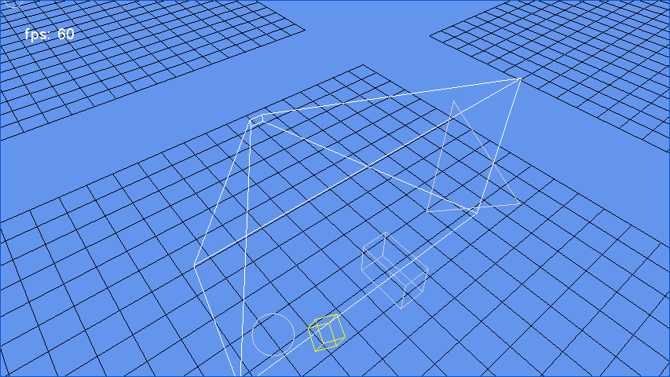

Collision Sample
Ported from Microsoft's XNA 4.0 Collision Sample.
Source for this sample on GitHub ↗

Play ▸Opens in a new tab. Click the canvas so it receives keyboard input.
About this sample
This sample tests containment and intersection between animated triangles, spheres and boxes and five primary shapes: a sphere, ray, viewing frustum, axis-aligned box and oriented box. Most primary shapes have white outlines, while the ray is red. Moving shapes turn red when contained, yellow when intersecting and light gray when disjoint.
Switch groups to see each collision pairing. The camera can rotate, zoom and change between perspective and orthographic projection; the simulation can also be paused and stepped.
Controls
| Action | Keyboard | Gamepad |
|---|---|---|
| Next shape group | G | A |
| Rotate camera | Arrow keys | Right stick |
| Zoom | + / − | Triggers |
| Perspective / orthographic | P / O, or B to toggle | B |
| Reset camera | Home | Y |
| Pause | Space | X |
| Step while paused | [ / ] | — |
| Exit | Esc or close the tab | Back |
On touchscreens, tap to change groups, drag to rotate and pinch to zoom.